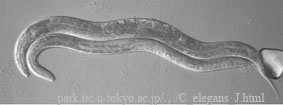
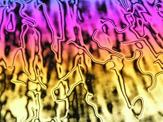
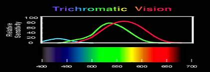
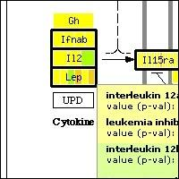
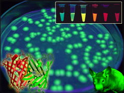

Fundamental biochemical and genetic processes are evolutionary conserved among all living organisms. Discovery and dissection of such processes in lower species, such as the nematode C. elegans, allowed them to act as models to delineate the regulation of these processes in mammalian cells. C. elegans as a model organism offers a great potential for genetic analysis, partly because of its rapid life cycle, large brood size and its sequenced genome.
In this project the participants will manipulate gene expression by mutation and RNA interference and analyse the corresponding phenotypes of the knock-downs by cell biological analysis. Vice versa, we want to map a genetic mutation to a single chromosome by tracking a certain phenoype. All in all, this project provides an overview of the current state-of-the-art approaches used by scientists to modulate gene expression in order to characterize the function of their genes of interest.
Christine Parusel
Fisher Clinical Services AG, Allschwil, Switzerland
Christine did her PhD in Biochemistry at the FMI Basel and ETH Zurich and is currently coordinating Clinical Trials at Fisher Clinical Services, Allschwil. Applying genetic, cell biological and biochemical techniques, for her PhD thesis she functionally characterized a component of a multi-protein complex acting downstream of signalling networks (TOR/PI3K) that integrate diverse metabolic, stress and environmental cues to control cell growth, proliferation and survival.
Liquid crystals or mesogens are often referred to as a fourth state of matter. These molecules possess unique properties between those of conventional liquids and those of crystalline solids. Under special conditions- at a suitable temperature or in certain solvent- they show a variety of phases (mesophases) that have a fluidity of a liquid but molecules in these fluid phases tend to arrange and orient in a crystal-like way. Due to their interesting electrooptical properties LC molecules have a large application potential in displays of various kinds but they are also widely spread in nature. Some proteins, most components of cell membranes and even DNA are liquid crystalline in nature.
This project will deal with thermotropic liquid crystals i.e. organic substances that show one or more anisotropic liquid phases between melting point (below which material is in a solid state) and clearing point (above which material is in a state of isotropic liquid). Mesogenic properties of LC molecules are observed during cycles of heating from a solid crystal as well as during cycles of cooling from isotropic liquid.Students will be given to synthesize a homologue series of twin Schiff bases liquid crystalline molecules and learn how to characterize mesophases by polarizing microscopy. Mesogenic behaviour of synthesized group of molecules and their subunits will be compared to study structure and properties relationship.
Maja Sepelj
Rudjer Boskovic Institute, Zagreb, Croatia
Maja is a doctoral student of chemistry at Rudjer Boskovic Institute, Zagreb, Croatia. She has a diploma in biotechnology and is currently working on a thesis in synthesis and characterization of dimeric Schiff bases liquid-crystalline molecules. Her interests also include preparation and characterization of liquid- crystalline physical gels and metallomesogens.
Color vision in human beings is achieved through the differential excitation of three retinal pigments with different spectral sensitivities. The common principle behind color technology in photography, cathode ray television, or liquid crystal displays, is to mix in a controlled way the light of three different chromatic sources, each of them addressing one of the pigments, to reproduce the perception of basically any color.
In this project the students will build an optical setup to project three nearly monochromatic beams onto a white screen to demonstrate color constitution. By modulating the relative intensities of the three overlapping beams, they should be able to reproduce any color on the screen. Two different principles will be tested to control the beam intensities: variable neutral density filters, and birefringent plates between crossed polarizers, in analogy with the cathodic tube and liquid crystal display technologies. Reproducing the tones of a standard color table, requires a fine and systematic calibration of the "color device". We will design suitable scales for tuning the setup in a reproducible manner. Using a monochromator, the spectral components of the light from a computer display will be analyzed, to reveal the color calibration of a functional industrial device. In the final presentation, the students will briefly discuss the concepts of color vision and technology, and will present the finished setup. They will be able to reproduce any color on demand.
Erwin Portuondo-Campa
Ecole Polytechnique Federale de Lausanne, Switzerland
Erwin is currently finishing his PhD thesis in the Laboratory of Ultrafast Spectroscopy in the Swiss Federal Institute of Technology (EPFL), Lausanne. He studies the dynamical properties of water and organic solvents on interfaces, using ultrashort laser pulses to resolve in real time, processes that happen in a time scale of femtoseconds (10-15 s). He has also worked on the optical characterization of bacterial retinal proteins in three-dimensional crystals. Some of his hobbies: camping, hiking, speleology, dancing and skiing.
In the last decade microarrays have become widespread in the research laboratories, their usage ranging from scientific inquiries, to drug research and medical diagnosis. Microarrays or biochips are orderly arrangements of millions of short DNA pieces on a rigid plastic or glass surface. They are used to detect the amount of all messenger RNA in a cell of interest at the same time. Since each cell contains tens of thousands of different mRNA, different computational methods had to be developed to bring meaning to such huge amounts of data. These methods join the fields of mathematics, information technology, and molecular biology under the common name of bioinformatics.
In this project, students will be presented with the real microarray data of tumor or diseased cells. From the forest of information, they will have to find possible drug targets which are responsible for the phenotype. Students will use practical programming, statistical and bioinformatic skills acquired through the course of the project. The proteins of interest will then be presented on the maps of metabolic and signaling pathways, and through the 3D modeling software.
Nenad Bartonicek
Faculty of Sciences, University of Zagreb, Croatia
Nenad has a degree in molecular biology and is finishing pharmacy at the Faculty of pharmacy and biochemistry, Zagreb. As a member of the Bioinformatics group at the Faculty of Sciences, he works on analysis of microarray and metagenome (genome of whole environments) data. He is interested in graphs and networks of life, nanotechnology and drug mechanisms.
Fluorescence is a widely exploited phenomenon that has revolutionized the field of molecular imaging. Combined with the advances in microscopy techniques, it has allowed visualization of microstructures at unprecedented resolutions. In molecular biomedical research, some of the most important functional imaging techniques involve the usage of fluorescent proteins. First discovered in the form of the famous green fluorescent protein (GFP), this family of proteins now includes many others whose properties span a broad spectrum of colors, biological characteristics and potential applications. These proteins are widely used to investigate the localization and structural properties of many molecular, cellular and organismal processes. From tracking individual proteins within cellular compartments, to chasing tumor cells across animal tissues, fluorescent proteins are indispensable tools of the modern biomedical sciences.
During this project, students will learn about the basic principles of fluorescence, molecular biology of proteins and their applications in cutting edge biomedical imaging. Starting with the DNA coding for the proteins, they will be charged with the task of transforming bacteria, identifying those producing the proteins of interest using DNA and protein analysis techniques, and finally purifying enough of the several fluorescent proteins to be visualized. They will also get an overview of general concepts in biomedical engineering as they relate to the project at hand, as well as their clinical importance.
Serge Kobsa
Yale University School of Medicine, New Haven, CT, USA
Serge is a fourth year medical student at the Yale School of Medicine, where he is currently working on a PhD in tissue engineering within the departments of Biomedical Engineering and Pediatric Surgery, as a part of the combined MD/PhD Medical Scientist Training Program. His scientific background spans neuroscience, molecular biology and psychology. Examples of his past research include examining the neural chemistry and behavior in rats, and studying radial migration of neurons in the subventricular zone of the developing mouse brain. He hopes to become an academic pediatric surgeon and a Médecins Sans Frontières volunteer.
We plan several lectures during the school. Tentative list of speakers is given below.
Igor Kaludjera (University of Bologna, Italy): Agent-based computational economics: growing artificial economies for experimentation and analysis
Martina Mijuskovic (ETH Zurich, Switzerland): Scientific communication
Bojan Zagrovic (ETH Zurich, Switzerland): Computational biology: watching proteins and nucleic acids move, kick and scream
Fang Wei (Credit Suisse, London, United Kingdom): From cyber shopping to cyber friendship: How Google works and why it is everywhere in our lives
Lovorka Peric (ETH Zurich, Switzerland): Computational chemistry: simulated world
Ante Krisko (Universite Denis Diderot - Paris 7, France): Lonely proteins: structure and dynamics of protein assemblies
Dijana Dominis (Astrophysikalisches Institut Potsdam, Germany): How to find very distant planets by gravitational lensing?
Andrej Ficnar and Mihael Grbic (University of Zagreb, Croatia): Physics Express
Predrag Prester (University of Zagreb, Croatia): From relativity to gravity: our understanding of space and time